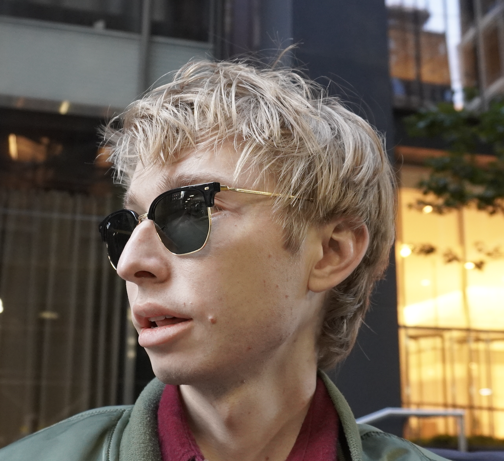

Welcome

Thanks for visiting my website!
About
Howdy! I'm an engineer working on brain-computer interfaces at Zyphra in downtown San Francisco.
I studied Mathematics (B.A.) and Statistics (B.S.) at UNC-Chapel Hill, where I began my research in computer vision for autonomous vehicles.
Upon graduation, I moved to Boston for the Computational Engineering program at Harvard University, conducting research in the CRISP Group where I developed a passion for computational neuroscience. I started a PhD in Statistics at Columbia University, but put my academic aspirations on hold to play the startup game. In January 2026, I moved from Manhattan to San Francisco for this next phase. Always happy to connect with new and old friends in the city.
Personal
Originally, I'm from Durham, North Carolina. In my free time, I enjoy photography and regularly post my work on flickr. I've also put a few of my favorites in the gallery section of this site.
I'm very passionate about movies and photography. I've watched way too many films and occasionally post reviews on my letterboxd page.
Releases
~February 2026~
We recently released ZUNA, a 380-million parameter diffusion autoencoder for EEG super-resolution. You can install it with
pip install zuna
Please let me know if you have any issues or questions. You can also submit a pull request on the GitHub repository
Links
Catch me at: